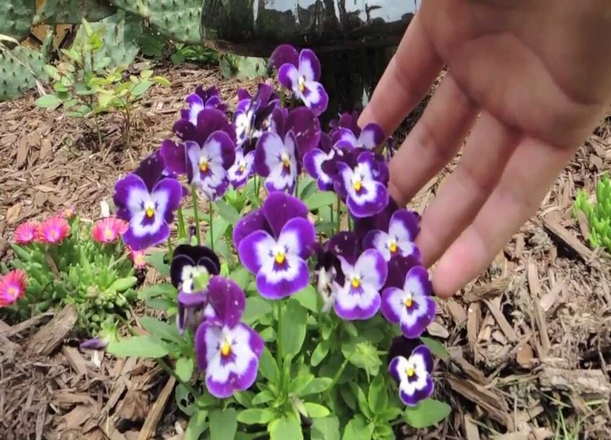
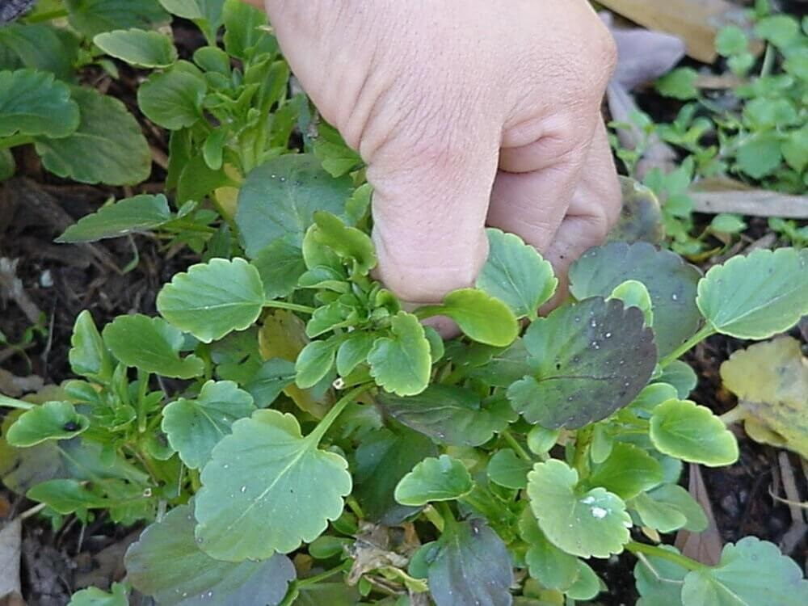
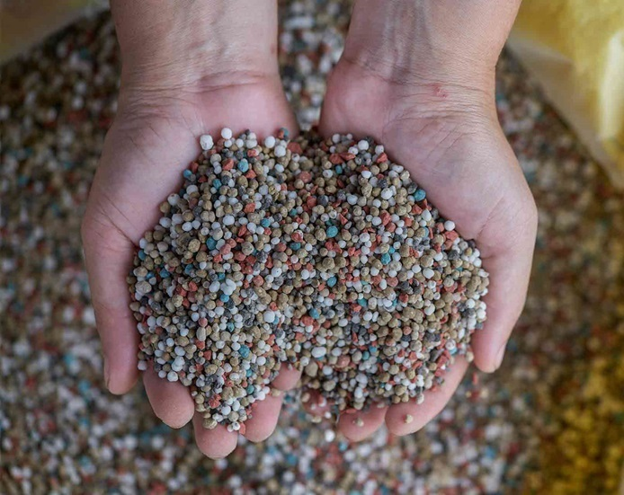

Annual Color Maintenance
The maintenance of annuals involves grooming, fertilizing, and inspecting for disease and pest problems. The task is time consuming, but necessary to maintain the quality and health of the plants.

Plant Inspection:
- All annual bed plants should be inspected for insect infestation and disease weekly
- Check the undersides of leaves and stems for insects and check plants for discoloration, premature shedding of leaves, loss of vigor and/or death of plant
- Plan to treat accordingly if infestation of pest or disease is discovered or suspected

Grooming:
- Remove dead and declining blooms
- Remove leaves that have turned yelow
- Prune or "pinch back" spent blooms and dead or dying stems back to the crown of the plant
- Remove all weeds that have emerged
- Touch up mini-bark nuggets and clean up and debris around the bed to complete grooming

Fertilization:
- pH is critical and important for all plants. Understanding your plant desired pH level is equally important. When plants are not performing, always take a soil sample and adjust your pH accordingly to achieve a 6.0-7.0 range (in general for most annual color plants)
- Fertilizing your annual color is critical and important. Apply a time released, balanced fertilizer. For blooming annuals, use products similar to 7-22-8. For annuals with foliage interest, such as coleus, cabbage, kale and others that blooming isn’t encouraged, use a product similar to 19-6-12
- The rate and types of fertilizer will change depending on the time of year and how established the annuals are